Note
Hello, welcome to the SunFounder Raspberry Pi & Arduino & ESP32 Enthusiasts Community on Facebook! Dive deeper into Raspberry Pi, Arduino, and ESP32 with fellow enthusiasts.
Why Join?
Expert Support: Solve post-sale issues and technical challenges with help from our community and team.
Learn & Share: Exchange tips and tutorials to enhance your skills.
Exclusive Previews: Get early access to new product announcements and sneak peeks.
Special Discounts: Enjoy exclusive discounts on our newest products.
Festive Promotions and Giveaways: Take part in giveaways and holiday promotions.
👉 Ready to explore and create with us? Click [here] and join today!
Fun6 Distance Sensitive Ball
In this project, we utilize an ultrasonic module to control the vertical movement of a ball on the stage. When you click the green flag, place your hand above the ultrasonic module. The ball will ascend if the distance between your hand and the module is less than 15 cm; otherwise, it will descend. When the ball makes contact with a line, it triggers a delightful sound and activates twinkling starlight effects.
Follow these steps to set up the project, and feel free to tweak the effects to your liking once you’re accustomed to how it works.
1. Select Sprites
Remove the default sprite and select the Ball, Bowl, and Star sprites.
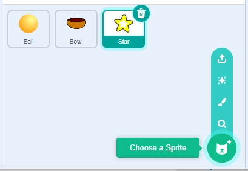
Position the Bowl sprite at the center bottom of the stage and increase its size.
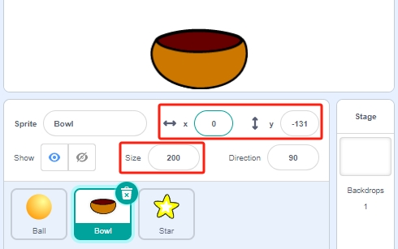
Place the Ball sprite directly above the Bowl sprite, setting its direction to 0 to allow vertical movement.
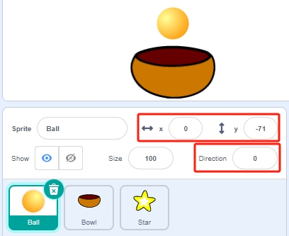
Adjust the Star sprite’s size and set its direction to 180 to ensure it falls downward. This can be altered to different angles if preferred.
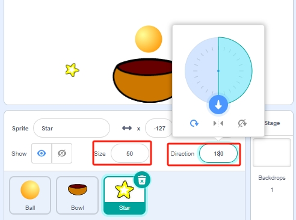
Add the Stars backdrop for added ambiance.
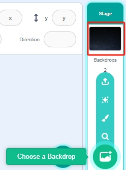
2. Draw a Line Sprite
Now add a Line sprite.
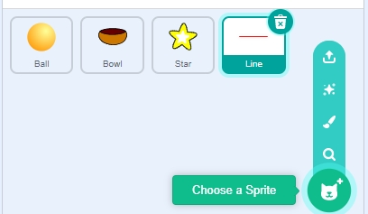
Navigate to the Costumes page of the Line sprite.
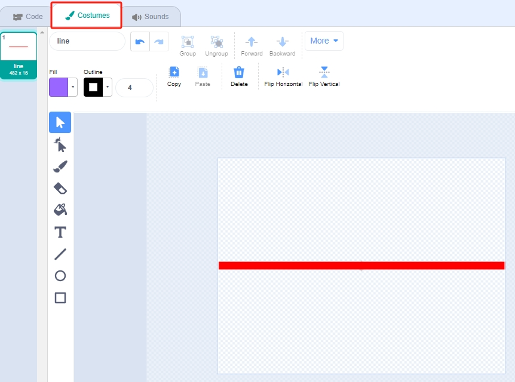
Slightly reduce the width of the red line on the canvas, duplicate it four times, and align these lines.
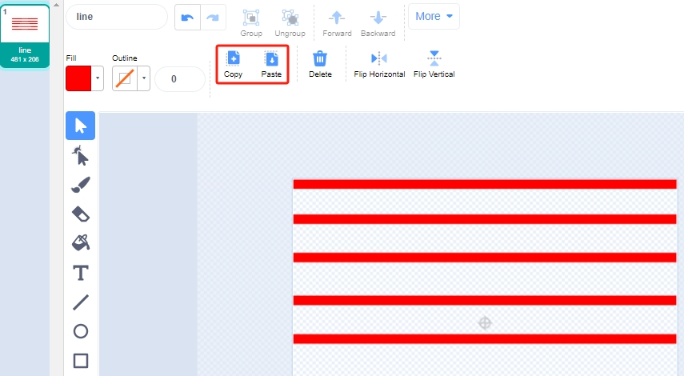
Color each line differently. Select a line, use the Fill tool, and pick a color.
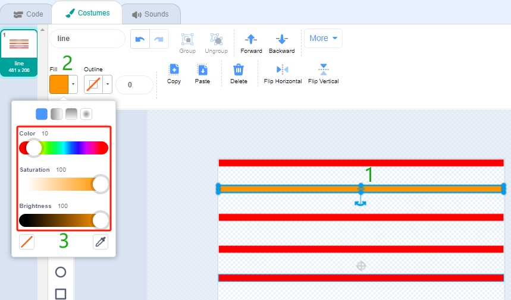
Apply this method to color all lines accordingly.
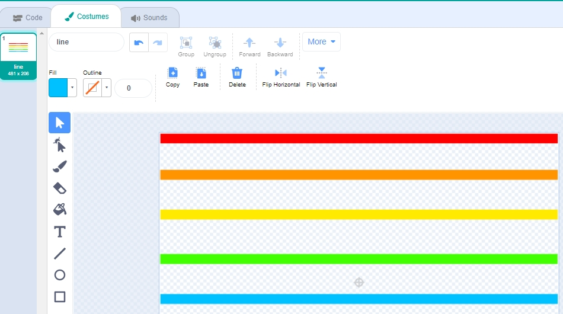
Return to the Code page and position the Line sprite at the top of the stage.
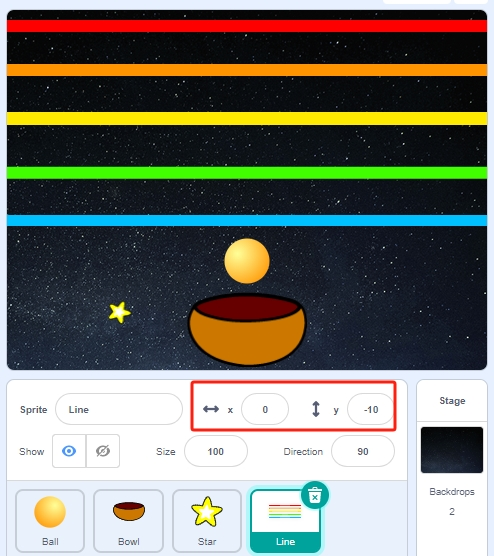
{kind=link}
{kind=link}
{kind=link}
{kind=link}
3. Scripting the Ball Sprite
Here, we script the Ball sprite to move up or down based on the distance detected by the ultrasonic module, with a movement constraint to simulate landing on the Bowl sprite.
When the green flag is clicked, set the initial position of the Ball sprite.
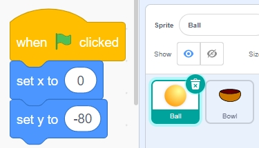
Use an [if else] block to check if the distance is less than 15. If true, move the Ball sprite up by 10 steps, given its direction is set to 0.
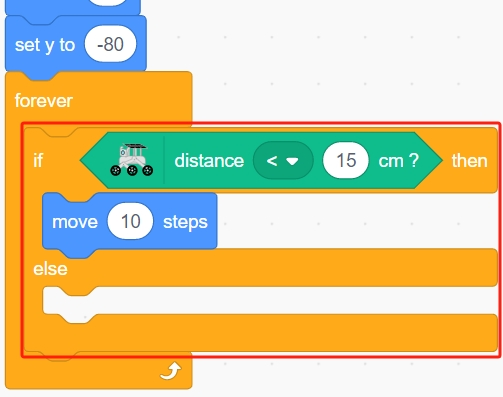
Otherwise, let the Ball sprite fall, limiting its Y coordinate to a minimum of -100, adjustable to appear as though it’s landing on the Bowl sprite.
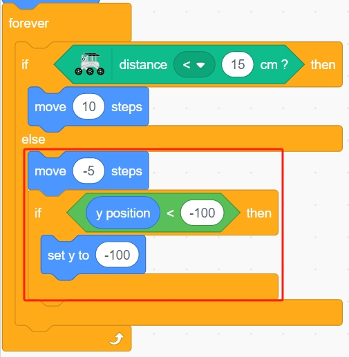
Script interaction where the Ball sprite, upon touching the Line sprite, records its Y position to the variable ball_coor and broadcasts a bling message.
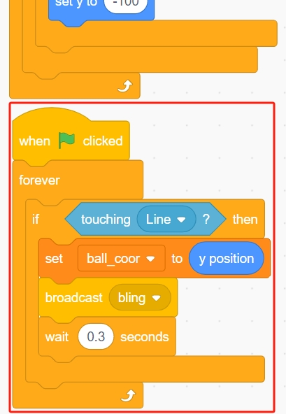
4. Scripting the Star Sprite
Initially hide the Star sprite when the green flag is clicked. Upon receiving the Bling message, clone the Star sprite.
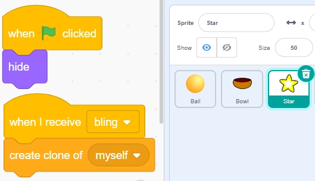
Set the clone’s position and sound effects to synchronize with the Ball sprite’s position.
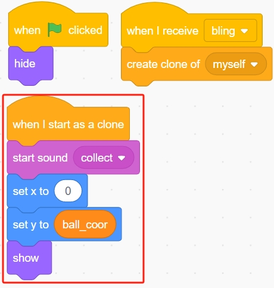
Allow it to rotate between -80 to 80 degrees randomly.
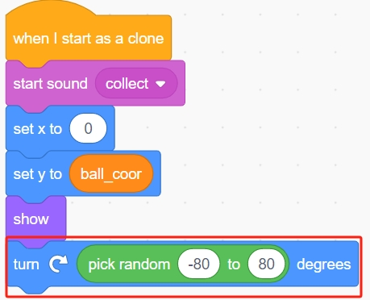
Adjust the appearance and behavior of the Star sprite as needed to enhance the visual effect.
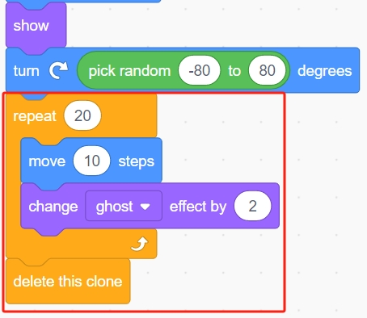
Programming is complete. Click the green flag to run the script and see if it meets your expectations.